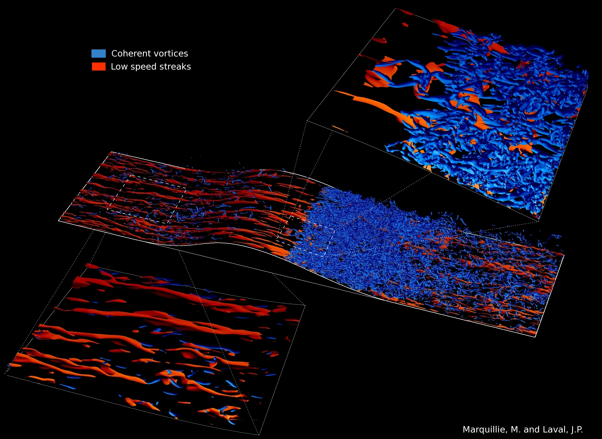
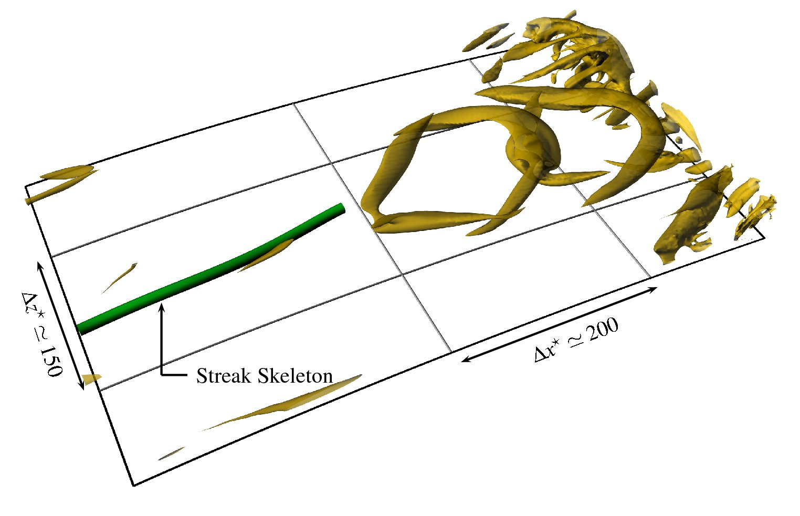
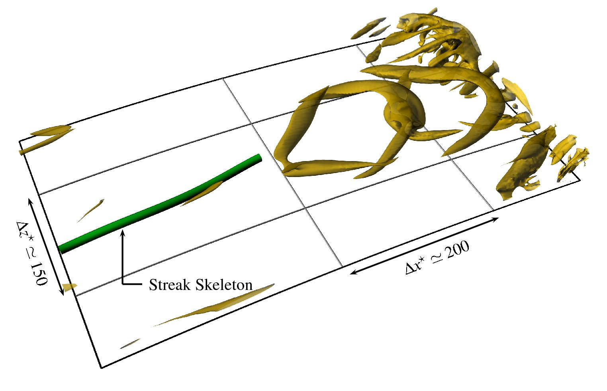
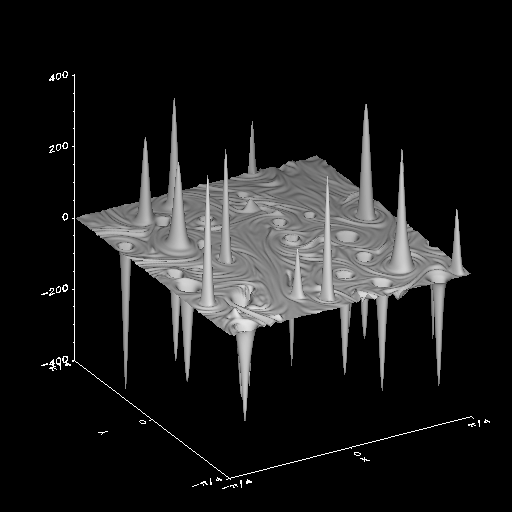
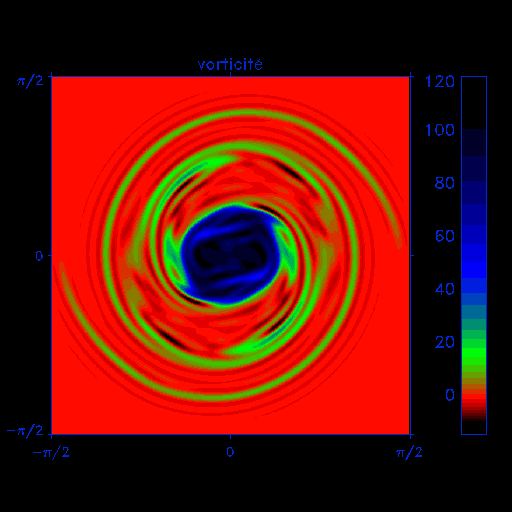
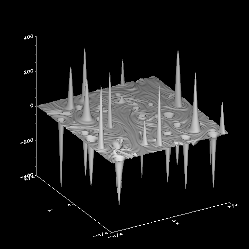
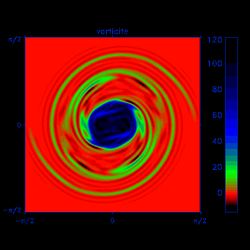
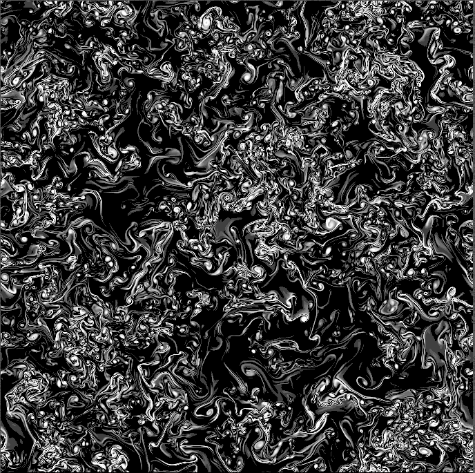
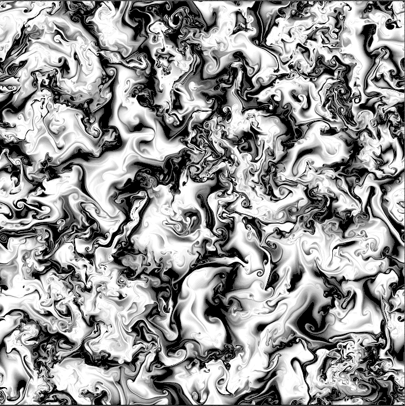

CFD gallery
DNS of channel flow over a smooth profile (Reτ= 617 at the inlet)
Database available

(click to enlarge)
 

Vortices (blue/red) generated by streaks (green) instability
Isovalue of Q

(click to play movie)
Evolution of streaks at y+=20 (upper flat wall: medium adverse pressure gradient)
(images created using VTK by M. Marquillie)

(click to play movie)
Evolution of streaks at y+=20 (lower curved wall: strong adverse pressure gradient)
(images created using VTK by M. Marquillie)

(click to play movie)
Stratified turbulence
DNS of forced stratified turbulence at two different Froude number

2D decaying turbulence, merging of two vortices
Results of a Direct Numerical Simulation (DNS)
of the 2D Navier-Stokes equation
(simulation on a 1024 x 1024 grid)
 



(click to enlarge)
2D Electron-MHD
DNS of 2D electron-MHD on a 2048 x 2048 grid: result of the pseudo-vorticity field and the pseudo-current field.


(click to enlarge)
 Return to home page
Return to home page